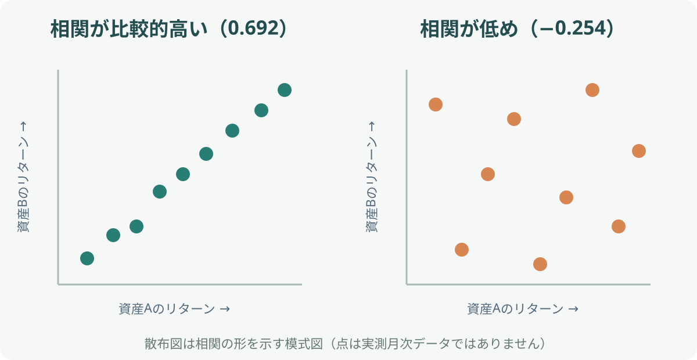

カテゴリツリーを開く
相関係数とは？分散投資での見方と注意点
原稿作成：2026年11月3日／構成見直し：2026年11月4日
相関係数は、2つの資産の値動きがどの程度同じ方向に動く傾向があるかを示す統計指標です。分散投資では、投資先を増やすだけでなく、値動きの関係が異なる資産を組み合わせることが重要になります。
1. 相関係数の読み方
投資で相関係数を計算するときは、一般に資産価格そのものではなく、一定期間ごとのリターン（騰落率）を使います。たとえば月次リターン同士を比べるなら、同じ月の株式と債券のリターンを並べ、その動きの関係を計算します。
| 相関係数 | 値動きの関係 | 分散の観点 |
|---|---|---|
| ＋1に近い | 同じ方向に動きやすい | 組み合わせても分散効果は小さくなりやすい |
| 0に近い | 直線的な関係が弱い | 値動きを組み合わせる効果が期待できる |
| −1に近い | 反対方向に動きやすい | 理論上は変動を相殺しやすい |
相関係数0は「値動きが全く関係ない」と断定する値ではありません。相関係数は線形の関係を測るため、非線形の関係や極端な局面での連動を十分に表さないことがあります。
2. なぜ分散投資に関係するのか
同じような値動きをする資産だけを複数保有しても、同じ要因で同時に下落する可能性があります。一方、異なる要因で動く資産を組み合わせると、一方の下落を他方の値動きが和らげ、全体の変動が小さくなる場合があります。

分散効果は相関だけで決まりません。各資産の値動きの大きさ（ボラティリティ）や、ポートフォリオ内の保有割合も関係します。相関が低くても、価格変動が極端に大きい資産を少量加えると、全体のリスクが高まることがあります。
3. GPIFの4資産で相関を見る
国内資産を含む参考例として、年金積立金管理運用独立行政法人（GPIF）が2025年4月から適用する基本ポートフォリオの策定に用いた4資産間の相関係数も確認します。これはETFの過去10年月次相関とは異なり、基本ポートフォリオ策定に使われた推計値です。上のETF表と混ぜず、別の前提として読みます。GPIF公式資料
−1（逆方向）0（関係が弱い）＋1（同方向）
| 相関係数 | 国内債券 | 外国債券 | 国内株式 | 外国株式 |
|---|---|---|---|---|
| 国内債券 | 1.000 | — | — | — |
| 外国債券 | 0.073 | 1.000 | — | — |
| 国内株式 | −0.254 | 0.271 | 1.000 | — |
| 外国株式 | −0.125 | 0.560 | 0.692 | 1.000 |
国内株式と外国株式の相関は0.692、国内債券と国内株式は−0.254です。GPIFの値は実現した特定期間の相関係数ではなく、政策ポートフォリオの策定に用いた推計値である点が重要です。
相関がポートフォリオの変動に与える差
GPIFが2025年4月1日から適用した基本ポートフォリオの前提条件に掲載された標準偏差（国内債券2.60%、国内株式19.19%）と相関係数−0.254を使い、両資産を50%ずつ持つケースを計算します。年率標準偏差は約9.35%です。上の相関表と同じ資料の数値を使っているため、標準偏差と相関係数の前提はそろっています。
| 相関の仮定 | ポートフォリオの年率標準偏差 | 意味 |
|---|---|---|
| −0.254（GPIF推計値） | 約9.35% | 基本ポートフォリオの推計値 |
| 0 | 約9.68% | 相関がないと仮定 |
| ＋1 | 約10.90% | 完全に同じ方向と仮定 |
同じ資産・同じ保有比率でも、相関の前提によってポートフォリオの振れ幅が変わります。これは標準偏差と相関係数を用いた理論計算であり、実際の運用成績ではありません。
4. 相関係数を見るときの注意
- 計測期間：1年と10年では相関が異なる場合があります。
- データ頻度：日次・月次など観測間隔をそろえます。
- 通貨：円換算か外貨建てかで関係が変わることがあります。
- 市場環境：平常時と金融危機などの局面で相関が変化することがあります。
- 資産の中身：指数名だけでなく、構成資産や地域・業種の重複を確認します。
過去の相関係数が低かったからといって、将来も同じ関係が続くとは限りません。特に市場全体が大きく揺れる局面では、普段は異なる値動きをする資産が同時に下落することがあります。
5. 実際のポートフォリオでの使い方
- 株式・債券・現金など、資産の役割を整理する。
- 比較する資産の計測期間・通貨・頻度をそろえる。
- 相関係数だけでなく、各資産の変動率と保有比率も確認する。
- 下落局面での値動きや、資産の中身の重複も調べる。
- 自分の投資期間・リスク許容度に合う配分かを判断する。
まとめ
相関係数は資産同士の値動きの関係を確認する指標です。＋1に近いほど同方向、−1に近いほど反対方向に動く傾向があります。分散投資では有用な視点ですが、相関は期間や市場環境によって変わるため、変動率・資産構成・下落局面も合わせて確認しましょう。